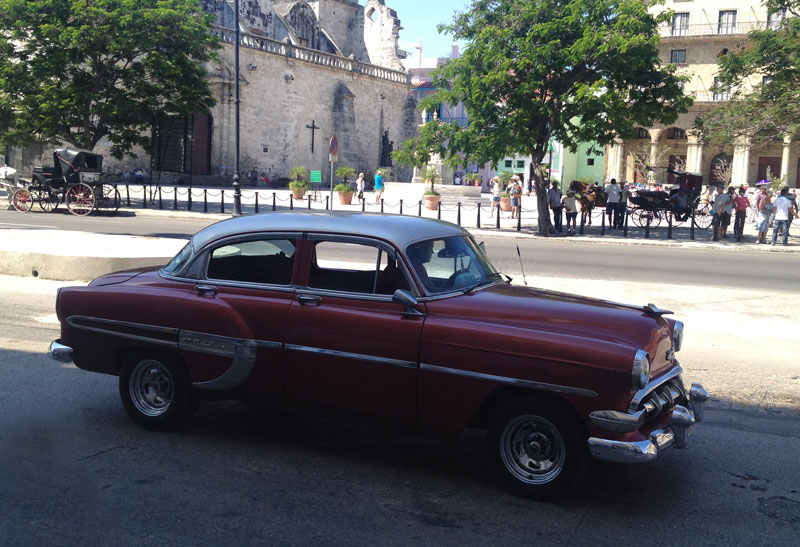
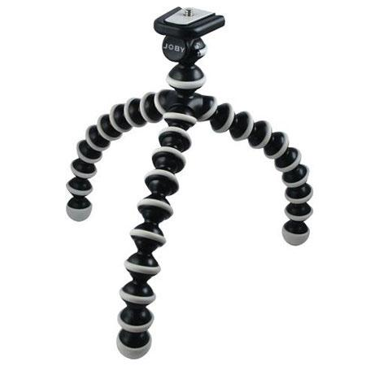
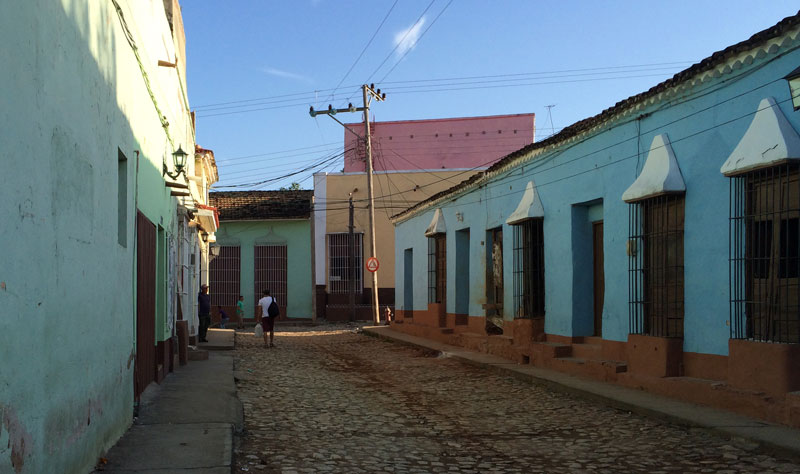

Cuba está ahora más de moda que antes y al parecer todo el mundo, o casi todos quieren visitarla. El Papa de la Iglesia Católica, El Presidente de los Estados Unidos, los legendarios Rolling Stones, Channel, incluso Michael Bay y sus Transformes entre otros, han hecho su estancia en esta isla tropical. Si está en tus planes incluirte en esta lista y te interesa la fotografía, aquí tienes algunos puntos que puedes tener en cuenta.

Lo primero que debes tener en mente y para que tu estancia sea más placentera es recordar que como isla tropical al fin las temperaturas son altas y el sol es bastante fuerte, por lo que asegúrate de incluir en tu kit fotográfico: sombrero o gorra de béisbol, gafas de sol, ropa que te cubra sin ser esta calurosa y zapatos cómodos que respiren y que te permitan caminar largos trechos, pues si quieres lograr estupendas fotos, tendrás que desandar las viejas calles de Cuba.
Las plazas, las calles estrechas, los edificios viejos, los negocios, y los cubanos en sí, son temas que encontrarás en lugares como La Habana Vieja o la ciudad de Trinidad en Sancti Spíritus. Las zonas históricas de cualquier villa fundada en Cuba por los españoles en el siglo XVI se convierten en espacios ricos para la fotografía. Si estas fotos además las haces (o conviertes) en blanco y negro, aumentarás mucho más su impacto.
 La vida nocturna en Cuba, principalmente en La Habana es muy rica, por lo que genera una gran cantidad de fotografías. Recuerda que para fotos con poca iluminación es primordial realizarlas con un trípode y el Joby Gorillapod será muy útil ya que al ser pequeño es fácil de transportar.
No importa donde vayas en Cuba, la mayoría de las veces encontrarás algo interesante que fotografiar, y si visitas un restaurant privado o “paladar” como también se le conoce, además de disfrutar de la auténtica cocina cubana, comprobarás que la atmósfera en estos lugares es muy interesante para hacer fotos.
En las playas cuida la exposición de tus fotos, al ser lugares con mucha luz, esta puede exceder el rango dinámico de tu cámara en caso que uses un iPhone o cualquier otro Smartphone. Si usas uno de estos últimos dispositivos, ajusta primero el foco y luego la exposición.
Capturar el estilo de vida de los cubanos, los colores, texturas, construcciones (antiguas y modernas) las personas que habitan, incluso todo mezclado, te proporcionará una gran cantidad de fotos. Por lo tanto, asegúrate traer un dispositivo de almacenamiento lo suficientemente grande donde puedas realizar salvas de cada día de fotos y así no tener que borrar alguna fotografía. Incluye en tu equipaje una laptop o un macbook para poder descargar cada noche las fotos hechas. Puedes agregar también un disco duro externo para aumentar tu espacio de almacenamiento, así como un cargador portátil.
A la hora de recargar batería, la mayoría de las tomas de corriente son de 110 volt, algo que debes tener presente.
Por último, si quieres publicar en Internet algunas de las fotos que vayas haciendo, podrás hacerlo (si deseas hacerlo durante el trayecto) conectándote a WIFI_ETECSA, una conexión que brinda ETECSA en los principales parques y zonas de Cuba. Para conectarte deberás adquirir un cupón con un usuario y contraseña con un tiempo máximo de una hora de conexión. Vale aclarar que este será válido mientras no se consuma todo el tiempo y podrá utilizarse en cualquier punto de acceso del país.
Ya que la mayoría del tiempo estarás sin conexión a Internet puedes instalar en tu iPhone aplicaciones de mapas offline como Maps.me con el cual podrás buscar diferentes lugares de interés.
